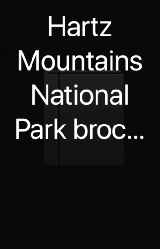
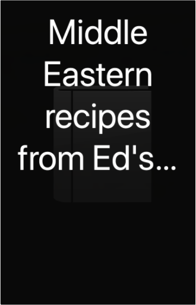
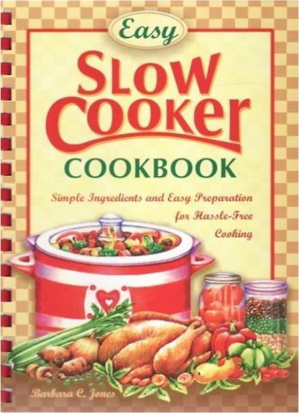
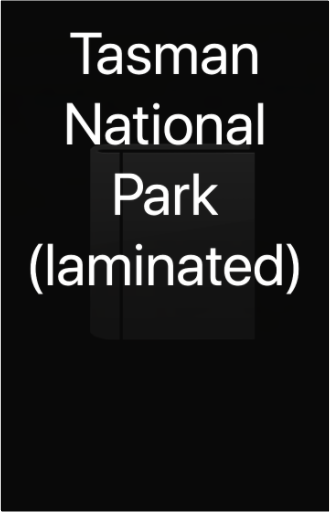

Books
Movies
Albums
Books - Biographies and Non-Fiction
Books - Ed's nautical books and others
Books - Fiction - Ed and Imo
Books - Fiction - Imo - 1
Books - Fiction - Imo - 2
Books - Miscellaneous
Books in Oxford
Books that didn't make it to Oxford
CDs in box
Coffee table books
1
2
3
4
5

Hartz Mountains National Park brochure guide
Holy Bible - King James edition
Marine Orders Part 30: Prevention of Collisions (Issue 7) (ColRegs)

Middle Eastern recipes from Ed's 24th (& others that we liked the look of)
Mount Field National Park
Mt Wellington
Outdoors and Fishing
Recipe Journal

Slow Cooker Recipes
Tasman National Park

Tasman National Park (laminated)
The Little Christmas Cookbook
1
2
3
4
5


 Made with Delicious Library Made with Delicious Library
Made with Delicious Library Made with Delicious Library